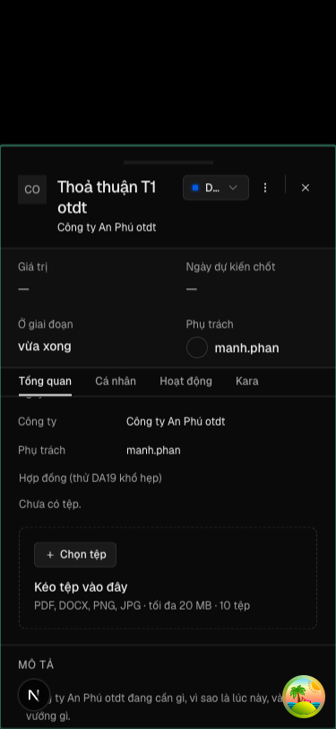
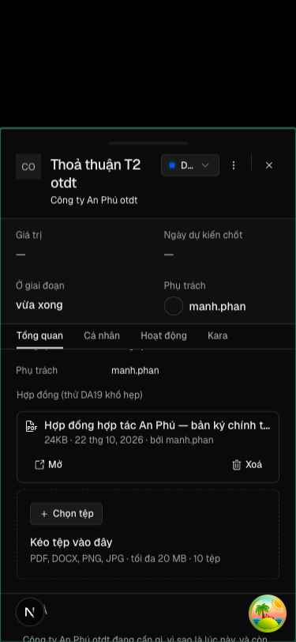
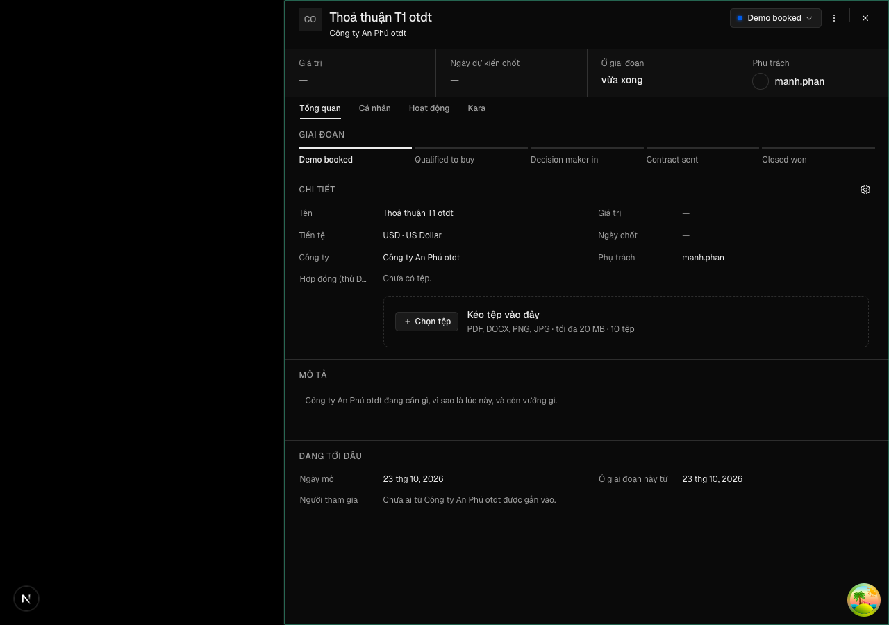

"Ô Tệp trên phiếu đọc được ở khổ điện thoại: vùng kéo thả không bóp chữ, nhãn trường hiện trọn"
Vì sao làm
Sửa sau DA19 truong-tep (#532, lên production 22/10). Lái tay trên www.onehub.center ở khổ 375: trong ô Tệp của phiếu thoả thuận, vùng kéo thả NguonKeoTha đặt nút «Chọn tệp» cạnh khối chữ trong cột giá trị hẹp của DetailSheetProperty (cột nhãn 6.5rem), nên «Kéo tệp vào đây» và mô tả xuống từng từ một dòng; nhãn trường dài bị cắt («Hợp đồng (thử D…»). Ở 1280 gọn. Hộp tải nguồn của Kho tài liệu là người dùng thứ hai của NguonKeoTha.
Đã hứa
- AC-1 — Given phiếu một thoả thuận có trường Tệp, ô chưa có tệp, khổ 375, When mở phiếu và cuộn tới ô Tệp, Then trong
- AC-2 — Given cùng phiếu ở khổ 375 với trường Tệp mang nhãn dài «Hợp đồng (thử DA19 khổ hẹp)», When mở phiếu, Then nhãn
- AC-3 — Given phiếu ở khổ 375 với ô Tệp đã có một tệp, When mở phiếu, Then trang không cuộn ngang và dòng tệp cùng khung
- AC-4 — Given cùng phiếu ở khổ 1280, When mở phiếu, Then hàng Tệp như trước vòng: nhãn ở cột trái cạnh phần giá trị, và
- AC-5 — Given Kho tài liệu với kho nguồn bật, When mở hộp tải nguồn ở khổ 1280 rồi ở khổ 375, Then ở 1280 nút «Chọn tệp»
- AC-6 — Given các bài DOM của vùng kéo thả và ô Tệp, When chạy chúng, Then chọn tệp, thả tệp, từ chối sai kiểu hay quá
Thiết kế
docs/superpowers/specs/2026-10-22-o-tep-dien-thoai-design.md
Quyết định
- 2026-10-22 · Máy · approach · S1 — Vùng kéo thả đổi bố cục theo bề rộng khung của chính nó (container query trong NguonKeoTha), không theo breakpoint md của màn.Cột giá trị phiếu và thân hộp tải nguồn hẹp hơn màn nhiều và không đi theo khổ màn; một breakpoint màn để lại 1280 với cột hẹp và 375 với hộp rộng hơn cột.
- 2026-10-22 · Máy · approach · S1 — Hàng Tệp trên phiếu đặt nhãn trên giá trị dưới md bằng một lựa chọn mới của DetailSheetProperty; chỉ OTep bật, các hàng wide khác giữ nguyên.Nhãn bị cắt trong cột 6.5rem chỉ hết cắt khi ra khỏi cột; nới cột hay cho nhãn xuống dòng đổi mọi hàng của mọi phiếu.
- 2026-10-22 · Máy · descope · S1 — bỏ design-pass — sửa bố cục một thành phần sẵn có, không màn mới; ảnh 375 và 1280 của màn thật do răng chụp ở S4 thay cho bản mẫu.Không có lựa chọn thị giác mới để duyệt trên bản bấm được: hướng sửa là xếp dọc khối sẵn có, đã khai trong bảng trạng thái của design doc.
- 2026-10-22 · Máy · descope · S1 — bỏ đường-đo — không có hồ sơ cơ hội; đây là sửa lỗi bố cục của DA19 đã giao.Không có ngưỡng nghiệm thu nào để đo; câu giao chỉ đòi ảnh 375 gọn và bài DOM xanh.
- 2026-10-22 · Máy · approach · S1 — Vùng kéo thả giữ flex-wrap sẵn có và cho khối chữ một bề rộng nền của thang (basis), để khối chữ tự rớt xuống dưới nút khi khung hẹp; không thêm container query.Gap-probe P0: lối flex-wrap kèm bề rộng nền cho cùng ảnh ở 375 và 1280 với một lớp thay vì một cơ chế mới; lỗi gốc là khối chữ flex-1 min-w-0 không bao giờ rớt dòng.
- 2026-10-22 · Máy · approach · S1 — Hỏi: dưới md, chỉ hàng Tệp đặt nhãn trên giá trị (khuyến nghị), hay mọi hàng wide của phiếu cùng xếp dọc?Gap-probe P0: đây là nếp nhìn của phiếu — một hàng xếp dọc giữa các hàng hai cột là lựa chọn người dùng thấy, không có tệp luật nào quyết.
- 2026-10-22 · Người · seal · gate1 —
- 2026-10-22 · Máy · approach · S3 — Bề rộng nền của khối chữ là basis-52 (13rem).Đo ở so-s3.md: chỗ sau nút ở mọi khung điện thoại đã đo dưới 208px, ở 1280 từ 470px trở lên.
Bằng chứng
Các eval
| Eval | Tiêu chí | Loại | Verdict | run_id | verified_at |
|---|---|---|---|---|---|
| E1 | AC-1 | ui-check | PASS | minted-o-tep-dien-thoai-E1-r1 | 2026-10-22T18:01:14Z |
| E2 | AC-2 | ui-check | PASS | minted-o-tep-dien-thoai-E2-r1 | 2026-10-22T18:01:14Z |
| E3 | AC-3 | ui-check | PASS | minted-o-tep-dien-thoai-E3-r1 | 2026-10-22T18:01:14Z |
| E4 | AC-4 | ui-check | PASS | minted-o-tep-dien-thoai-E4-r1 | 2026-10-22T18:01:14Z |
| E5 | AC-5 | ui-check | PASS | minted-o-tep-dien-thoai-E5-r1 | 2026-10-22T18:01:14Z |
| E6 | AC-6 | test | PASS | minted-o-tep-dien-thoai-E6-r1 | 2026-10-22T18:01:14Z |
Chi tiết từng eval
PASS E1 · ui-check
AC-1: Given phiếu một thoả thuận có trường Tệp, ô chưa có tệp, khổ 375, When mở phiếu và cuộn tới ô Tệp, Then trong

Frame đã lưu: E1-step1.png (bản sao otdt-phieu-rong-375.png); các ảnh khác do răng lưu: otdt-phieu-co-tep-375.png, otdt-phieu-rong-1280.png, otdt-nguon-375.png, otdt-nguon-1280.png (cùng thư mục evidence). Mạng: driver là răng script (không có công cụ đọc network trong phiên này) nên không có E1-network.txt; ghi n-a (driver). Không có dev server tự start ngoài phiên đo của tien-de.mjs (đã tự dọn).
PASS E2 · ui-check
AC-2: Given cùng phiếu ở khổ 375 với trường Tệp mang nhãn dài «Hợp đồng (thử DA19 khổ hẹp)», When mở phiếu, Then nhãn


Frame đã lưu: E2-step1.png, E2-step2.png (cả hai là bản sao của otdt-phieu-rong-375.png); ảnh gốc của lượt chạy: otdt-phieu-rong-375.png, otdt-phieu-rong-1280.png, otdt-phieu-co-tep-375.png, otdt-nguon-1280.png, otdt-nguon-375.png. Network: răng puppeteer, không có tool đọc network nên networkObserved = n-a (driver); ghi chú ở E2-network.txt. Chiều đỏ trên onehub 830d82e1f không chạy lại trong eval này.
PASS E3 · ui-check
AC-3: Given phiếu ở khổ 375 với ô Tệp đã có một tệp, When mở phiếu, Then trang không cuộn ngang và dòng tệp cùng khung

NETWORK: driver là script do-man.mjs chạy qua tien-de.mjs, không có công cụ đọc network/console, nên ghi n-a (driver) tại E3-network.txt. Lượt đo kết thúc sạch (phien-do: xong). Còn tiến trình tien-de.mjs/phien-do.mjs khởi lúc 1:02–1:03 AM trong ps thuộc eval song song khác, không tắt.
PASS E4 · ui-check
AC-4: Given cùng phiếu ở khổ 1280, When mở phiếu, Then hàng Tệp như trước vòng: nhãn ở cột trái cạnh phần giá trị, và


Frame da luu: evidence/otdt-phieu-rong-1280.png (goc), E4-step1.png, E4-step2.png (ban sao, step 1 cung luot E1 chua co anh rieng; step 2 la anh dang xet). Chieu do (basis-full) khong nam trong steps, khong chay. Network: driver la script do hinh hoc + anh, khong co doc network -> n-a (driver), khong tao E4-network.txt. Ghi chu phu (khong thuoc Expected cua E4): nhan truong o cot trai bi cat thanh 'Hợp đồng (thử D…' (nhanCat=true) do nhan thu trong du lieu mau dai.
PASS E5 · ui-check
AC-5: Given Kho tài liệu với kho nguồn bật, When mở hộp tải nguồn ở khổ 1280 rồi ở khổ 375, Then ở 1280 nút «Chọn tệp»
375: tranHop=false (scrollWidth hop <= clientWidth+1) va trangRong=375 <= 375 (khong co 'nguon 375 cuon ngang'): PASS 375 nguon: nutTren=true, rongChu 277/277 Frames da luu: E5-step1.png (= otdt-nguon-1280.png), E5-step2.png (= otdt-nguon-375.png), thu muc evidence. E5-network.txt ghi chu driver puppeteer khong co duong doc network. Server do la cua phien do, da tat.
PASS E6 · test
AC-6: Given các bài DOM của vùng kéo thả và ô Tệp, When chạy chúng, Then chọn tệp, thả tệp, từ chối sai kiểu hay quá
Chặn «bài cũ bị sửa» đạt: năm tệp bài DOM không đổi so với merge-base origin/onehub. Ran 15 tests across 3 files. [1.86s]
Eval không phân biệt (Analyst)
Vòng verify
- Round 1: E1–E6 và bảy lệnh suite đều đạt, không có eval hỏng. Ba mục ngoài hợp đồng (công cụ đo) ghi ở review-findings.md để người quyết ở Cổng 2.
Tài nguyên
| Khối | Tác tử | Token đầu ra |
|---|---|---|
| S4 round 1 | 20 | 32.869 |
1 lượt chấm · tổng 32.869 token
Giới hạn và ngoài hợp đồng
- Cắt chữ nhãn ở các hàng khác của phiếu — cột nhãn 6.5rem là luật chung của mọi hàng.
- Các hàng `wide` khác của phiếu (lý do thua, cuộc hẹn kế, «Cũng ở đây»).
- Chữ, kiểu tệp nhận, giới hạn cỡ và quyền mở tệp của ô Tệp.
Giao
chưa gộp vào onehub (nhánh production kho khai)